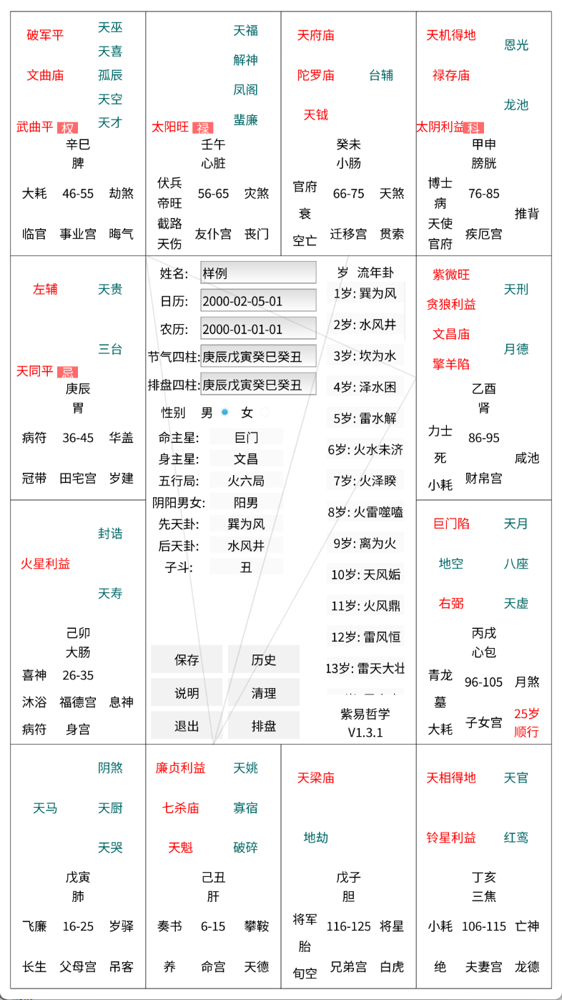
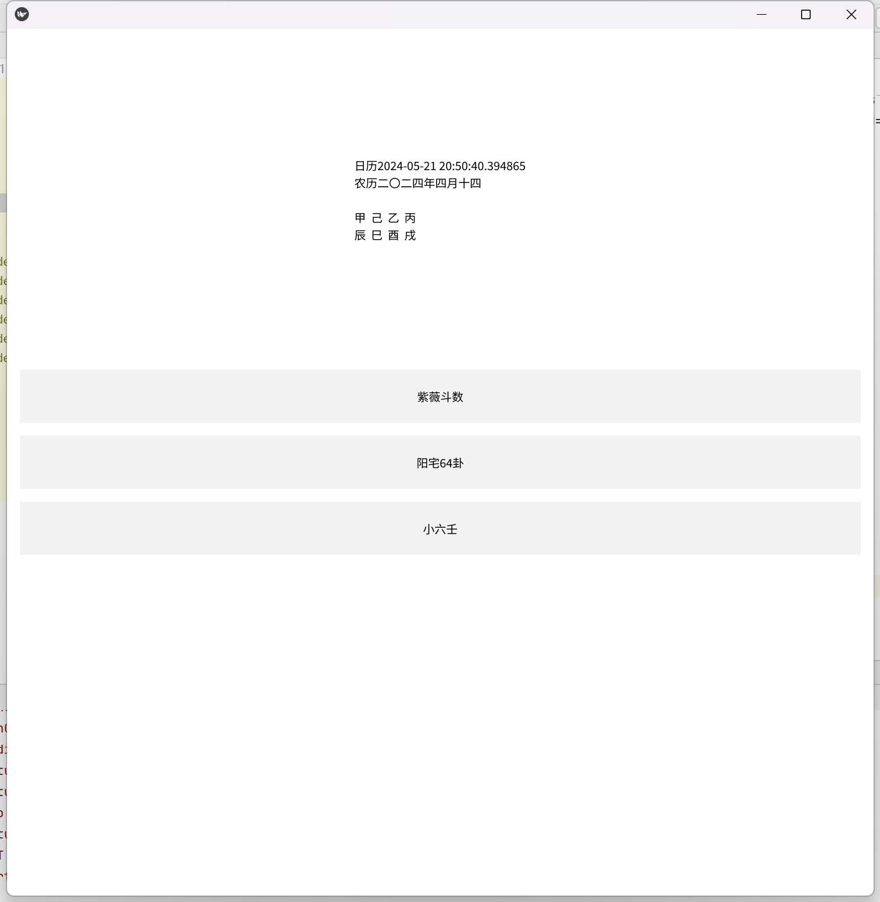

本人也是一枚野生弟子,虽然有倪师的汉化版本天纪软件，但是有时候外边没带电脑,给人看不太方便，所以想在app上看。
但是其他app排出来学习时看的还不一样，而且使用个软件一定要手机号微信号等等个人信息的行为让我觉得不齿,还广告漫天飞
看不惯别的排盘软件动不动就几百的会员费用和充斥的广告加上排出来的和倪师资料里的风格差异太大，用不习惯，所以决定自己开发一个，代码开源不开源后面看看情况，真感兴趣我就直接开源（项目已开源）
本软件完全遵照倪师在网上的资料独立开发，本人承诺此软件用不收费、不添加广告，用于用于学习天纪的野生弟子们使用或者给人看盘
软件开理论上支持安卓、苹果、linux和windows、以及部分国产操作系统甚至是树莓派等平台，但目前仅编译安卓和windows,因为我没有设备做测试
如果您有任何建议或使用遇到软件中发现我和资料中有什么不对的地方，请直接扫码加群联系我 ，我会在之后的版本进行更正
补充，奉劝不懂还乐于百度查自己排盘的各个星耀的行为不可取，因为往往是自己吓自己，本来没什么还给自己找不自在，真想了解找有一定水准的帮忙看比较好
学习阶段，可以参考百度的资料，但这一行取象最准，我就比较容易学到形，用倪师的话说是资料的作用是参考而不是盖棺定论，望诸君共勉
| 安卓截图 | 电脑截图 | 扫码加群,我们一起打造一款免费好用的专给野生弟子们排盘的软件 |
|---|---|---|
|  |  | |
| 版本号 | 版本信息 | 软件运行平台 |
| 1.3.1 |
增加阳宅部分的批注 四化星的化字去掉 每次都要删除另一个时间再排盘不合理，改为按最后一次改动的时间排盘 主界面加一个看当前的干支的信息 甲乙星耀改颜色 喜大普奔，电脑端软件也终于去掉了恶心的黑框框 |
安卓
Windows
|
| 1.2.4 |
增加保存查看以往的盘的功能 |
安卓
Windows
|
| 1.2.1 |
增加易经推命部分，有流年和流月，易经推命部分可直接点击对应的卦进行查看批注 需要注意的是所有批注来自读图，所以请结合实际问卦的人的相关信息进行临机变化 至此本软件已经完成复刻任务，以后也可以由我解决使用问题，后续看有没有时间添加阳宅宫位的批注 软件使用的字体为Google Fonts 的开源字体 Noto Sans Simplified Chinese |
安卓
Windows
|
| 1.1.2 |
增加三方四正辅助线功能，四化星用红蓝色标注， 主星统统在左上角，缺少天厨,先补上 资料缺少天空信息,先补上 资料缺少月德星信息,先补上 资料缺少空亡星信息，先按丙级星补上， 资料缺少推背星信息，先按"丁"级星补上， 资料缺少吊客星信息，但是结合上下文应该是串克，先按串客星补上 地空地劫改和主星在同一片区域 左辅右弼改为和主星在同一片区域 天马改为和主星在同一片区域 |
安卓
Windows
|
| 1.0.1 |
当前版本为初代版本，完成了紫薇斗数的排盘部分功能
一年的起始按农历正月初一开始，后面的易经推命部分是使用的四柱是按立春这天作为一年的开始 农历闰月生的按下个月算，子时的话按00：00作为两天分界线, 1月1日 23：00 - 00：00 按1月1日算，1月2日 00：00 - 1：00 按1月2日算，和倪师在视频中讲的完全一样 |
安卓
Windows
|
| 以下部分是我在网收集的资料，供大家用于学习交流使用 | 天纪教材电子书 | 书籍名称 |
| 20100907非打印第一版 简体 |
倪海厦-天纪-天机道终稿(20100907非打印第一版）简体.pdf
倪海厦天纪系列之人间道.pdf
倪海厦天纪系列之地脉道.pdf
|
|
| 天纪视频配套软件 | 此软件由网上搜集来的，是天纪软件的转简体字版本，软件由95年就开发出来了，但是目前发现简体版本存在一点问题，起码我发现在2020年以后的日期排盘会有点问题 |
天纪课程配套软件2.2.1（斗数，四柱，先天后天卦）.exe
|